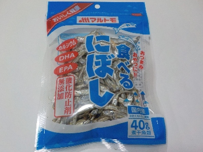

マルトモの食べるにぼしは塩加減がいい。
更新日 : 2024/03/31

大きさがわりと一定で食べやすい煮干でした。
煮干の味がちゃんとあるのと塩味があるので、そのままでも美味しく食べれました。おにぎりとかおにぎらずの具に使っても美味しかったです。
なにかと便利に使えそうな一品だと思いました。
2025/12/11 税込み238円で購入しました。
愛媛県伊予市米湊1696番地
更新日 : 2024/03/31

大きさがわりと一定で食べやすい煮干でした。
煮干の味がちゃんとあるのと塩味があるので、そのままでも美味しく食べれました。おにぎりとかおにぎらずの具に使っても美味しかったです。
なにかと便利に使えそうな一品だと思いました。
2025/12/11 税込み238円で購入しました。